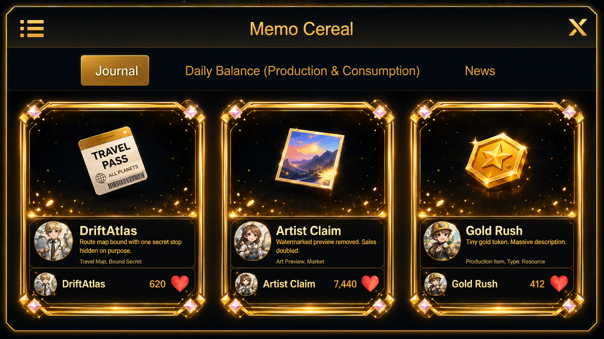
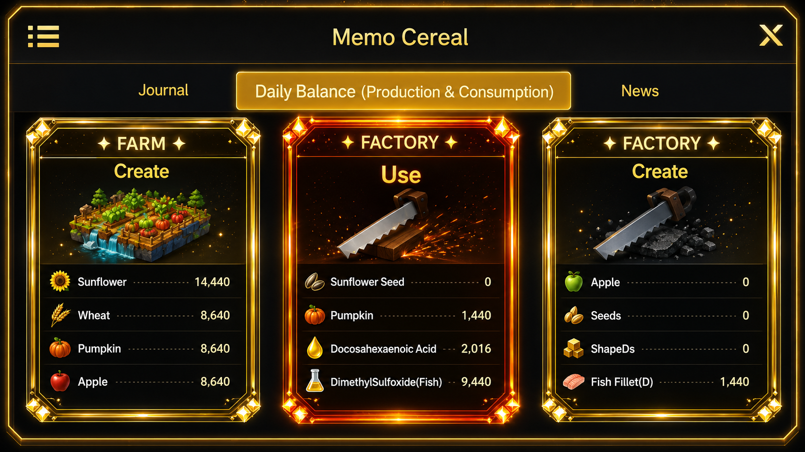
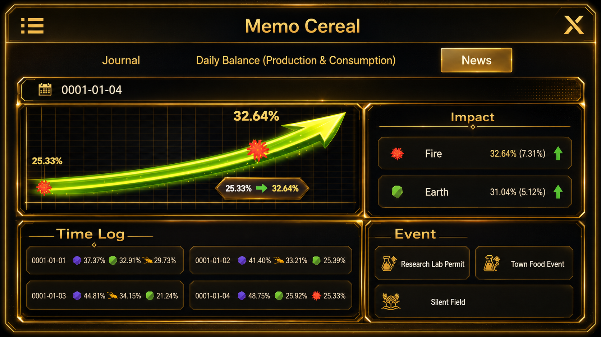

Sub System
메모시리얼

진입 경로
홈
→ 메모 시리얼메모 시리얼은 플레이 기록, 일일 생산·소비 현황, 뉴스와 이벤트 변화를 확인하는 정보 시스템이다.
기본 구성
메모 시리얼은 세 개의 탭으로 구성된다.
저널
일일 수지
뉴스저널
저널에서는 게임 진행 중 발생한 기록과 메모를 카드 형식으로 확인한다.
표시 정보
- 기록 제목
- 기록 내용
- 작성자 또는 출처
- 날짜
- 반응 수치
- 관련 아이콘
저널은 게임 내에서 발생한 사건, 발견, 인물 기록, 짧은 메시지를 모아보는 공간이다.
일일 수지
일일 수지에서는 농장, 공장, 상점 등 각 구역의 하루 생산량과 소비량을 확인한다.
표시 대상
- 농장
- 공장
- 상점
- 개미굴
- 기타 생산 구역
표시 정보
- 생산한 아이템
- 생산 수량
- 소비한 아이템
- 소비 수량
- 구역별 총합
- 부족한 자원
- 남은 재고
하루 종료
→ 각 구역 생산량 집계
→ 각 구역 소비량 집계
→ 일일 수지 기록
뉴스
뉴스에서는 날짜별 미생물 변화, 시장 영향, 이벤트와 정책 변화를 확인한다.
영향
미생물과 시장에 발생한 변화가 표시된다.
예시:
- 빛 영향 감소
- 불 영향 증가
- 특정 미생물 비율 변화
- 수요 증가 또는 감소
타임 로그
날짜별로 미생물 비율과 주요 변화를 기록한다.
날짜
→ 미생물 구성
→ 변화 수치
→ 상승·하락 방향이벤트
현재 발생한 이벤트와 예정된 이벤트를 표시한다.
예시:
- 연구소 허가
- 지역 음식 행사
- 사회정책 발동
- 생산 이벤트
- 시장 이벤트

전체 흐름
게임 진행
→ 생산·소비·미생물·이벤트 기록
→ 메모 시리얼에 저장
→ 저널·일일 수지·뉴스에서 확인메뉴 설명
메모 시리얼
게임 진행 기록, 구역별 일일 생산과 소비, 미생물 변화, 뉴스와 이벤트를 확인합니다.